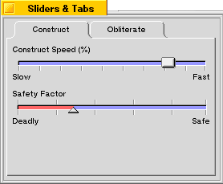
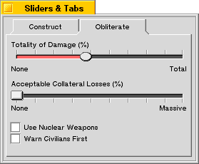

|
In the default implementation of this function, the limit labels are only drawn if both of them have been configured to a value other than NULL. If either of them is NULL, neither will be drawn.
|
| The Interface Kit Table of Contents | The Interface Kit Index |
Derived from: public BControl
Declared in: be/interface/Slider.h
Library: libbe.so
A slider is a control that provide a standard way for the user to select a value from a predetermined range; for example, if your application needs to let the user pick a value between 1 and 100, it's easy to create a BSlider object that the user can use to do this. Sliders can be either horizontal or vertical.
BSlider objects also provide a wide assortment of hooks that let you customize the appearance and behavior of your slider controls.
Creating a basic BSlider is very simple:
|
r.Set(5,5,255,55); slider = new BSlider(r, "const:slider1", "Construct Speed (%)", NULL, 0, 140);
This creates a slider named "const:slider1" with the label "Construct Speed (%)" above it. The range of possible values for the slider is 0 to 140.
You can add a splash of color to the slider, too. For example, if you want the slider bar to be light blue, you might add:
slider->SetBarColor(color);
You can also add hash marks to the slider:
slider->SetHashMarks(B_HASH_MARKS_BOTTOM); slider->SetHashMarkCount(10);
In this example, SetHashMarks() is used to specify that the hash marks should be below the slider; you can also specify B_HASH_MARKS_TOP to put them above the slider, B_HASH_MARKS_BOTH to put them both above and below the slider, and B_HASH_MARKS_NONE to omit them entirely (which is the default).
SetHashMarkCount() is called to indicate that you want 10 hash marks spaced evenly across the slider.
Finally, if you want to add labels at the ends of the slider, to indicate the minimum and maximum values, you can use the SetLimitLabels() function:
slider->SetLimitLabels("Slow", "Fast");
This sets the label for the minimum value (the left end of the slider) to "Slow" and the label for the maximum to "Fast".
The result is the "Construct Speed (%)" slider in the window pictures below. An example of a slider with the B_TRIANGLE_THUMB thumbType and hash marks above and below the slider is also shown.

You can customize the appearance of your BSlider by overriding virtual functions in the BSlider class that are responsible for drawing the slider bar, thumb, focus mark, and hash marks.
For example, let's say you want your slider's thumb to be round. Just create a new class—let's call it CustomSlider—derived from BSlider, and override the DrawThumb() function with code that might look something like this:
const rgb_color kWhite = {255,255,255,255};
const rgb_color kWhiteGray = {235,235,235,255);
const rgb_color kDarkGray = {100,100,100,255};
const rgb_color kBlackColor = {0,0,0,255};
void CustomSlider::DrawThumb(void) {
BRect r;
BView *v;
// Get the frame rectangle of the thumb
// and the offscreen view.
r = ThumbFrame();
v = OffscreenView();
// Draw the black shadow
v->SetHighColor(kBlackColor);
r.top++;
r.left++;
v->StrokeEllipse(r);
// Draw the dark grey edge
v->SetHighColor(kDarkGray);
r.bottom--;
r.right--;
v->StrokeEllipse(r);
// Fill the inside of the thumb
v->SetHighColor(kWhiteGrayColor);
r.InsetBy(1,1);
v->FillEllipse(r);
}
All rendering of a BSlider is done into an offscreen view, which you can get a pointer to by calling the OffscreenView() function. This improves performance and makes drawing the slider—especially complicated ones—look much smoother to the user.
This code gets a pointer to the offscreen view, then renders a round, beveled thumb into the offscreen view, filling the thumb's frame rectangle as returned by the ThumbFrame() function.
The result is a round thumb that looks like the one in the "Totality of Damage" slider in the picture below:

|
Initializes the BSlider by passing the appropriate arguments to the BControl constructor. BControl initializes the slider's label and assigns it a model message that identifies the action that should be carried out when the slider is invoked.
The frame, name, resizingMode, and flags arguments are the same as those declared for the BView class and are passed up the inheritance hierarchy to the BView constructor without change.
The minValue and maxValue parameters define the minimum and maximum values to which the slider can be set.
If you want to control whether the slider is horizontal or vertical, use the second form of the constructor, and set the posture argument to either B_HORIZONTAL or B_VERTICAL. If you don't specify this argument, the slider will be horizontal by default.
The thumbType argument defines the look of the slider's thumb, and can be either of the following values:
| B_BLOCK_THUMB | The thumb is a rectangular block. |
| B_TRIANGLE_THUMB | The thumb is a triangular pointer. |
|
Frees memory allocated by the BSlider object.
|
Augments the BControl version of this function to set the background color of the button so that it matches the background color of its parent. This function also sets the start position of the slider and allocates other memory needed for the slider to function.
See also: BView::AttachedToWindow(), BControl::AttachedToWindow()
|
Draws the slider by calling DrawSlider().
See also: BView::Draw(), DrawSlider()
|
DrawBar() draws the slider bar. The bar is the narrow region the thumb slides through. The bar should be drawn into the offscreen view.
BarFrame() returns the frame rectangle that encloses the slider bar.
These functions can be augmented or replaced by your own versions to alter the appearance of the slider bar.
See also: OffscreenView()
|
If the slider is in focus, draws a mark indicating that this is the case.
You can override this function to alter the appearance of the slider control.
|
DrawHashMarks() draws the hash marks.
HashMarksFrame() returns the frame rectangle that encloses the hash marks. If the hash marks are set to B_HASH_MARKS_TOP or B_HASH_MARKS_BOTTOM, the rectangle encloses only the area needed to draw the marks. If the setting is B_HASH_MARKS_BOTH, the hash marks frame rectangle is the bounds rectangle of the entire slider control.
These functions can be augmented or replaced by your own versions to alter the appearance of the hash marks.
|
Draws the entire slider control by calling the functions responsible for drawing the various parts of the control:
Once the slider has been drawn into the offscreen view, it's copied to its parent window.
See also: DrawBar(), DrawHashMarks(), DrawThumb(), DrawFocusMark(), DrawText()
|
Draws the slider's text areas. These are the minimum label, maximum label, and status message.
The minimum and maximum labels can be set using the SetLimitLabels() function. The status message is obtained by calling the UpdateText() function. If you want there to be a status message, simply override UpdateText() to return the string you want drawn as the status message.
|
This function can be augmented or replaced by your own version to alter the appearance or placement of the text.
See also: SetLimitLabels(), UpdateText()
|
DrawThumb() draws the slider's thumb. If you choose to reimplement this function, you should call Style() to determine whether to draw a block thumb or a triangle thumb.
ThumbFrame() returns the frame rectangle that encloses the thumb.
These functions can be augmented or replaced by your own versions to alter the appearance of the thumb.
|
Augments the BControl version of FrameResized() to adjust the offscreen view and bitmap used for rendering the slider.
|
GetPreferredSize() calculates the width and height of the area needed to render the complete slider control, given the current configuration of the control's various settings.
The width returned by this function is the width of the slider control. The height is calculated by taking the height of the slider bar itself, adding two times the height of the hash marks, then adding room for the status text (if there is any) and limit strings (if there are any).
Note that the height always includes room for hash marks both above and below the slider, even if the slider has no hash marks or only one of the two sets of marks.
ResizeToPreferred() resizes the slider control to be the preferred size.
You can override these functions to alter the preferred size of the slider; this is particularly important if you override other functions to change the appearance of the slider.
|
Augments the inherited version of KeyDown() to let the up and right arrow keys increment the value of the slider, and the down and left arrow keys to decrement the value of the slider.
See also: BControl::Invoke(), BView::KeyDown()
|
Overrides the BView version of MouseDown() to track mouse the mouse when the button is pressed. A single click causes the thumb to immediately reposition itself to the clicked location, and a click and drag motion causes the slider to follow the mouse cursor until the button is released.
If a modification message has been established, it is sent repeatedly while the mouse button is down. This can be used, for example, to let the changes to the value of the slider be instantly reflected in an onscreen display. When the mouse button is released and the slider has been set to its resting position, the slider's model message is sent.
See also: BView::MouseDown(), BControl::Invoke(), BControl::SetTarget(), ModificationMessage(), SetModificationMessage()
|
Returns a pointer to the offscreen BView in which the slider is rendered prior to being copied to the screen. Because the slider is a complex graphical construct, it's rendered offscreen, then copied onto the screen. This function is provided to make it possible to further customize the appearance of a custom slider control.
|
SetBarColor() sets the color of the slider bar.
BarColor() returns the slider bar's color.
|
SetBarThickness() sets the slider bar's thickness and BarThickness() returns the current thickness.
The slider bar's thickness determines how many pixels across the slider bar is. If no thickness is defined, the bar occupies the entire unused width or height of the slider's bounding rectangle.
|
Sets the font used for the slider's labels to font. The properties flags indicate which properties of the font should be used, and which should remain unchanged.
|
SetHashMarks() sets the placement of the hash marks. This value can be one of the following:
HashMarks() returns the current placement of the hash marks.
|
SetHashMarkCount() sets the number of hash marks that will be displayed above and/or below the slider.
HashMarkCount() returns the number of hash marks currently set up.
|
SetKeyIncrementValue() sets the amount by which the slider's value changes when the keyboard is used to move the thumb.
KeyIncrementValue() returns the amount by which the slider's value changes when the keyboard is used to move the thumb.
|
SetLimitLabels() sets the labels used to mark the minimum and maximum values on the slider.
MinLimitLabel() and MaxLimitLabel() return the current strings used to mark the minimum and maximum values on the slider.
|
SetModificationMessage() sets the model message that's sent while the mouse is being tracked. The modification message is sent repeatedly as long as the mouse button is held down after being initially clicked inside the slider.
ModificationMessage() returns the modification message currently set up.
See also: MouseDown()
|
SetOrientation() sets the slider's orientation and Orientation() returns its current orientation. The possible values are B_HORIZONTAL and B_VERTICAL.
|
SetPosition() sets the value of the slider given a value between 0.0 and 1.0, where 0.0 is the minimum value of the slider, and 1.0 is the maximum value. This lets you set the slider to a relative position without having to look up the maximum and minimum values of the slider.
Position() returns the slider value scaled to the range 0.0 to 1.0.
|
SetSnoozeAmount() sets the time (in microseconds) that the slider snoozes for between updates while the mouse is being tracked.
SnoozeAmount() returns the time that the slider snoozes while the mouse is being tracked.
|
SetStyle() sets the thumb style for the slider. The style can be either of the following two values:
| B_BLOCK_THUMB | The thumb should be a rectangular block. |
| B_TRIANGLE_THUMB | The thumb should be triangular. |
Style() returns the current thumb style.
|
SetValue() augments the BControl function to pin the value to the maximum and minimum values for the slider and the position of the thumb before calling the inherited function.
ValueForPoint() returns the slider value represented by the given screen coordinates.
|
Returns the status message that should be displayed with the slider. By default, this function returns NULL; if you want a status message to be displayed, simply override this function to return the appropriate string.
The pointer you return is yours; the DrawText() routine won't dispose of it unless you augment it to do so.
|
UseFillColor() sets the color used to fill the area of the slider bar that's "filled." That is, the part of the bar between the minimum value of the slider and the current thumb position. If the use_fill parameter is true, filling this area of the slider with the fill color is turned on. If use_fill is false, the entire slider bar is always drawn in the bar color.
FillColor() stores the current fill color in bar_color. The boolean value returned by the function is true if the fill color is being used, false if not.
The Archive() function adds the following fields to its BMessage argument:
| Field | Type code | Meaning |
|---|---|---|
| "_mod_msg" | B_RAW_TYPE | The flattened modification message. |
| "_sdelay" | B_INT32_TYPE | The snooze amount. |
| "_bcolor" | B_INT32_TYPE | The bar color. |
| "_fcolor" | B_INT32_TYPE | The fill color. |
| "_minlbl" | B_STRING_TYPE | The minimum limit label. |
| "_maxlbl" | B_STRING_TYPE | The maximum limit label. |
| "_min" | B_INT32_TYPE | The minimum possible value. |
| "_max" | B_INT32_TYPE | The maximum possible value. |
| "_incrementvalue" | B_INT32_TYPE | The keyboard navigation increment value. |
| "_hashcount" | B_INT32_TYPE | The number of hash marks to draw. |
| "_hashloc" | B_INT16_TYPE | Where to draw the hash marks. |
| "_sstyle" | B_INT32_TYPE | The thumb style. |
Some of these fields may not be present if the setting they represent isn't used, or is the default value. For example, if there is no minimum limit label set, the "_min_lbl" field doesn't exist.
| The Interface Kit Table of Contents | The Interface Kit Index |
Copyright © 2000 Be, Inc. All rights reserved..